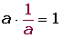

Resumen de fracciones y números racionales
Fracción
Una fracción es el cociente de dos números enteros a y b, que representamos de la siguiente forma:

b, denominador, indica el número de partes en que se ha dividido la unidad.
a, numerador, indica el numero de unidades fraccionarias elegidas.
Tipos de fracciones
Fracciones propias
Son aquellas cuyo numerador es menor que el denominador.
Fracciones impropias
Son aquellas cuyo numerador es mayor que el denominador.
Número mixto es el que está compuesto de parte entera y fraccionaria.
Para pasar de número mixto a fracción, se deja el mismo denominador y el numerador es la suma del producto del entero por el denominador más el numerador, del número mixto.
Para pasar una fracción impropia a número mixto, se divide el numerador por el denominador. El cociente es el entero del número mixto y el resto el numerador de la fracción, siendo el denominador el mismo.
Fracciones unitarias
Son aquellas cuyo numerador es igual al denominador.
Fracciones decimales
Son aquellas cuyo denominador es una potencia de 10.
Fracciones equivalentes
Dos fracciones son equivalentes cuando el producto de extremos es igual al producto de medios.
a y d son los extremos; b y c, los medios.
Si se multiplica o divide el numerador y denominador de una fracción por un número entero, distinto de cero, se obtiene otra fracción equivalente a la dada.
Al primer caso le llamamos ampliar o amplificar.
Al segundo caso le llamamos simplificar.
Fracciones irreducibles
Son aquellas que no se pueden simplificar.
Reducción de fracciones a común denominador
Reducir varias fracciones a común denominador consiste en convertirlas en otras equivalentes que tengan el mismo denominador. Para ello:
1º Se determina el denominador común, que será el mínimo común múltiplo de los denominadores.
2º Este denominador, común, se divide por cada uno de los denominadores, multiplicándose el cociente obtenido por el numerador correspondiente.
Comparación de fracciones
Fracciones con igual denominador
De dos fracciones que tienen el mismo denominador es menor el que tiene menor numerador.
Fracciones con igual numerador
De dos fracciones que tienen el mismo numerador es menor el que tiene mayor denominador.
Con numeradores y denominadores distintos
En primer lugar las tenemos que poner a común denominador.
Es menor la que tiene menor numerador.
Números racionales
Se llama número racional a todo número que puede representarse como el cociente de dos enteros, con denominador distinto de cero. Se representa por .
Suma y diferencia de números racionales
Con el mismo denominador
Se suman los numeradores y se mantiene el denominador.
Con distinto denominador
En primer lugar se reducen los denominadores a común denominador, y se suman o se restan los numeradores de las fracciones equivalentes obtenidas.
Propiedades
1. Interna:
El resultado de sumar dos números racionales es otro número racional.
a + b 
2. Asociativa:
El modo de agrupar los sumandos no varía el resultado.
(a + b) + c = a + (b + c) ·
3. Conmutativa:
El orden de los sumandos no varía la suma.
a + b = b + a
4. Elemento neutro:
El 0 es el elemento neutro de la suma porque todo número sumado con él da el mismo número.
a + 0 = a
5. Elemento opuesto
Dos números son opuestos si al sumarlos obtenemos como resultado el cero.
a + (-a) = 0
El opuesto del opuesto de un número es igual al mismo número.
Como consecuencia de estas propiedades, la diferencia de dos números racionales se define como la suma del minuendo más el opuesto del sustraendo.
a − b = a + (−b)
Producto de números racionales
El producto de dos números racionales es otro número racional que tiene:
Por numerador el producto de los numeradores.
Por denominador el producto de los denominadores.
Propiedades
1. Interna:
a · b 
2. Asociativa:
(a · b) · c = a · (b · c)
3. Conmutativa:
a · b = b · a
4. Elemento neutro:
a ·1 = a
5. Elemento inverso:

6. Distributiva:
a · (b + c) = a · b + a · c
7. Sacar factor común:
a · b + a · c = a · (b + c)
Cociente de números racionales
El cociente de números racionales es otro número racional que tiene:
Por numerador el producto de los extremos.
Por denominador el producto de los medios.
Potencia de fracciones
Propiedades
1. 
2.
3. Producto de potencias con la misma base:

4. División de potencias con la misma base:
5. Potencia de una potencia:

6. Producto de potencias con el mismo exponente:

7. Cociente de potencias con el mismo exponente:

Operaciones combinadas
1º.Efectuar las operaciones entre paréntesis, corchetes y llaves.
2º.Calcular las potencias y raíces.
3º.Efectuar los productos y cocientes.
4º.Pasar a fracción los números mixtos y decimales.
5º.Realizar las sumas y restas.